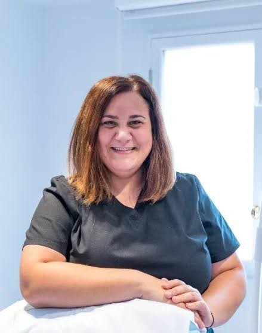
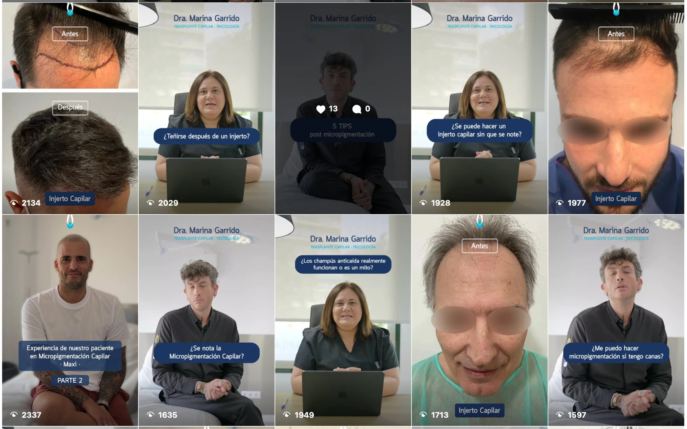
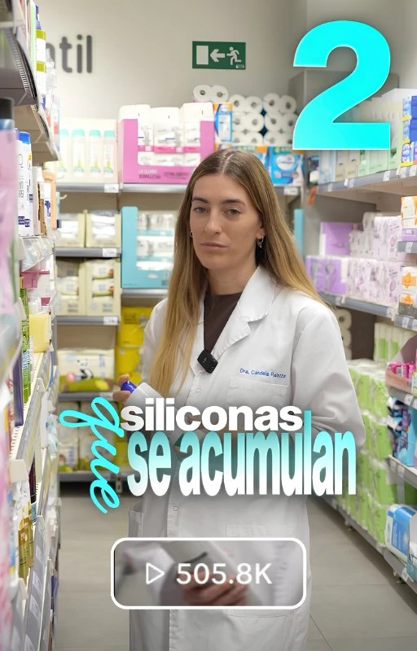
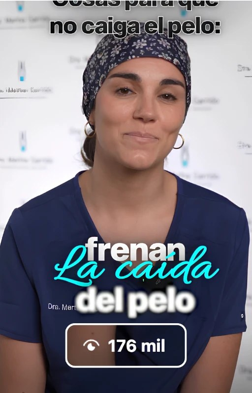
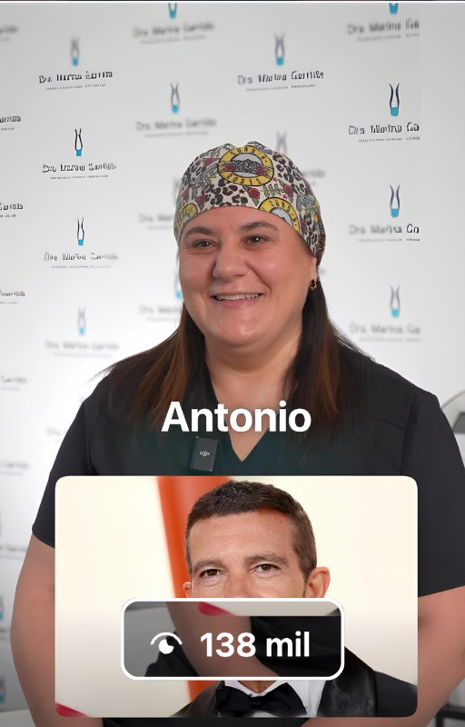
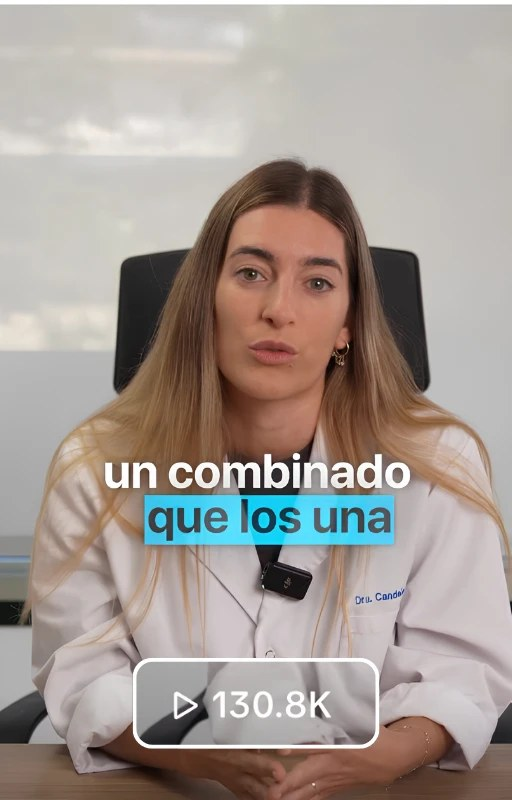
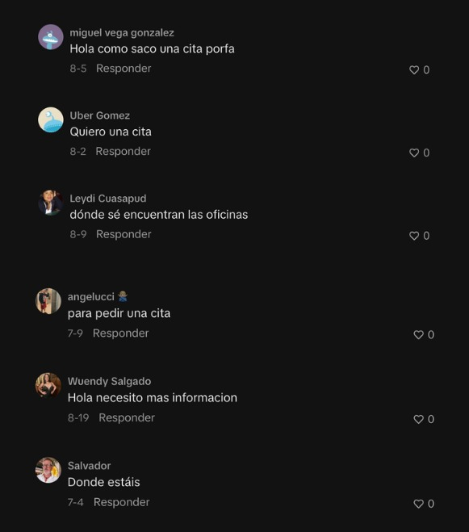

Artículo publicado el 2 de agosto de 2026 y actualizado en noviembre de 2026 con la entrevista a la Dra. Marina Garrido y la evolución de su perfil de Instagram.
Durante años, casi todos los pacientes de la Clínica Dra. Marina Garrido llegaban por recomendación. Un gran indicador de la calidad de su trabajo, pero también una dependencia de un único canal de captación. En abril de 2026 empezamos a trabajar su contenido en redes sociales y, en solo tres meses y con 12 vídeos, superó los 1,2 millones de visualizaciones entre Instagram y TikTok.
En este caso de éxito explicamos quién es la Dra. Marina Garrido, cuál era su punto de partida, qué estrategia seguimos y qué resultados ha obtenido su clínica.
Quién es la Dra. Marina Garrido

La Dra. Marina Garrido es tricóloga, cirujana capilar y directora de la Clínica Dra. Marina Garrido, en Barcelona. Lleva 16 años dedicada a la medicina capilar y su clínica ofrece injertos capilares, tratamientos para el cabello, micropigmentación capilar y visitas de valoración.
En sus inicios trabajaba en colaboración con otras clínicas. Cuando decidió impulsar su propia marca, se encontró con un reto nuevo: darse a conocer en una ciudad como Barcelona. Como ella misma reconoce, los médicos no suelen tener formación en marketing, y encontrar a alguien que les guíe bien no es sencillo.
El punto de partida: una clínica que crecía por recomendación
Antes de trabajar con nosotros, entre el 90 % y el 95 % de los pacientes de la clínica llegaban por el boca a boca. El resto se repartía entre la web y las redes sociales.
Que un negocio con 16 años de trayectoria se sostenga casi solo con recomendaciones dice mucho de la calidad de su servicio. Y es una gran base para cualquier estrategia de marketing: las redes sociales bien trabajadas funcionan, en el fondo, como un boca a boca a gran escala. Pero depender de un único canal también tiene inconvenientes:
- No se puede controlar. Las recomendaciones llegan cuando llegan, y no hay forma de impulsarlas.
- No se puede medir. Es difícil saber cuántas personas conocen la clínica y por qué.
- Es irregular. Hay meses con mucha actividad y otros con mucha menos.
En su perfil de Instagram, la clínica tenía algo más de 3.000 seguidores. Ya publicaba vídeos hablados a cámara, pero con un enfoque muy promocional y resultados discretos: entre 2.000 y 5.000 visualizaciones por vídeo y muy poca interacción. Además, crear ese contenido le suponía un esfuerzo importante.
«Antes era muy complicado para nosotros, se nos hacía muy tedioso. Ahora es superágil, vamos muy rápido y muy bien.»
Dra. Marina Garrido

Origen: colaboración con Palo Seco
La Clínica Dra. Marina Garrido llegó a Mediatic a través de Palo Seco, la agencia de SEO que ya se encargaba de su web y su posicionamiento en Google.
La agencia Palo Seco y Mediatic colaboran activamente en el crecimiento de sus clientes: Mediatic cuenta con Palo Seco para la parte de SEO, y Palo Seco cuenta con Mediatic para la parte de contenido.
Trabajar de forma conjunta multiplica los resultados. El SEO atrae a quien busca activamente un tratamiento capilar en Google, y el contenido llega a quien todavía no lo está buscando. Además, los vídeos refuerzan la visibilidad de la marca y redirigen tráfico hacia la web. La propia doctora explica que, tras la renovación de la web, el equipo de recepción notó en pocas semanas un aumento de llamadas, correos y contactos.
La estrategia en Instagram
Con la clínica apostamos por tres tipos de vídeo, cada uno pensado para una parte distinta del embudo de venta, de forma que el contenido cuide todo el recorrido del paciente: desde quien todavía no conoce la clínica hasta quien está listo para pedir cita.
- Vídeos de viralidad, para llegar a un público mucho más amplio y dar a conocer la clínica a quien no la conocía. Por ejemplo, rankings de famosos o vídeos sobre productos que ayudan a fortalecer el cabello.
- Vídeos de nutrición, con explicaciones más largas, de entre un minuto y minuto y medio, que educan a la audiencia y generan confianza.
- Vídeos de venta, específicos sobre los tratamientos de la clínica y las dudas habituales de los pacientes. Llegan a menos personas, pero ayudan a convertir.
Cada vídeo se publica a la vez en Instagram y TikTok: a veces funciona mejor en una plataforma, a veces en la otra y a veces igual en las dos. Si quieres saber cómo se construye un vídeo así, explicamos cómo escribir el guion de un reel de Instagram.
Así se nota el cambio: los vídeos de antes se movían en unos pocos miles de visualizaciones, y estos superan con facilidad las 100.000.




Un vídeo a la semana, menos de dos horas al mes
La agenda de una clínica no deja mucho margen. Por eso planteamos un ritmo de un vídeo semanal, que la clínica puede mantener a largo plazo sin agobios.
Grabamos una vez cada tres meses, en una sesión de unas cinco horas que se adapta a la actividad de la clínica, con cirugías y visitas en marcha. Sumando la revisión de guiones y del material editado, la dedicación de la doctora y su equipo es inferior a dos horas al mes. Del resto se encarga Mediatic.
Los resultados
En los tres primeros meses, con solo 12 vídeos, el contenido de la clínica superó los 1,2 millones de visualizaciones entre Instagram y TikTok, todas ellas orgánicas:
- Instagram: vídeos de 164.000, 138.000 y 60.000 visualizaciones.
- TikTok: vídeos de 505.800, 144.000 y 130.000 visualizaciones.
- Seguidores en Instagram: de algo más de 3.000 a 7.637 (dato actualizado en noviembre de 2026).
Público nuevo y muy cualificado
Más allá del volumen, lo más relevante es a quién llega el contenido. En el vídeo de 505.800 visualizaciones, por ejemplo:
- Lo vieron 460.000 personas distintas (no son reproducciones repetidas, sino personas reales o cuentas únicas).
- El 100 % de las personas que lo vieron no seguía la cuenta, y el 92 % eran espectadores nuevos, es decir, no recurrentes: personas a las que por primera vez se les impactaba con un vídeo de la clínica.
- El 64 % de las personas que lo vieron eran hombres, que es precisamente el público principal de los tratamientos capilares que ofrece la clínica.

Para un negocio local como una clínica, esto es clave: el contenido llega a cientos de miles de personas que no sabían de su existencia, y lo hace al perfil de paciente adecuado.
Pero, más allá de las visualizaciones, lo que de verdad importa es tener un impacto real en personas interesadas en los tratamientos. Lo vemos en los comentarios de pacientes potenciales que se muestran en esta captura. Y no son los únicos: muchas más personas escriben a la clínica por mensaje privado, conversaciones que, por privacidad, no vamos a mostrar.
«Tras uno de los primeros vídeos, los amigos de mi hijo le contaron que habían visto a su madre en TikTok. Él, que no tiene móvil, llegó a casa preguntando qué había hecho yo para que todo el mundo hablara de mí.»
Dra. Marina Garrido
Beneficios para la clínica
El primer cambio llegó en forma de pacientes: cada día hay personas que preguntan en los comentarios cómo pedir cita, dónde está la clínica o si pueden tratarles, además de las consultas que llegan por mensaje privado y por teléfono.
Además, la clínica ha ganado un canal de captación propio y medible. Durante años casi todo dependía del boca a boca, que no se puede controlar ni medir. Ahora hay un canal que se puede impulsar y analizar vídeo a vídeo, y que complementa las recomendaciones en lugar de sustituirlas.
También ha mejorado la imagen de la clínica. Pacientes y conocidos de la doctora han destacado la calidad de los nuevos vídeos, y algunos colegas le han pedido el contacto de Mediatic para sus propios negocios.
Y todo ello sin que la clínica tenga que dedicar tiempo a las redes: la dedicación de la doctora y su equipo es inferior a dos horas al mes, un tiempo que pueden seguir invirtiendo en lo que de verdad importa, que es atender a sus pacientes.
La opinión de la Dra. Marina Garrido
En octubre de 2026 grabamos una entrevista con la doctora, aprovechando una jornada de grabación en la clínica. Cuando le preguntamos qué destacaría de trabajar con Mediatic, lo resumió en una palabra: tranquilidad.
«Me da mucha tranquilidad. Sé que lo que está escrito está bien revisado y que no tengo que estar pensando: ahora tengo que hacer esto, ahora toca publicar. Todo es muy fluido, y en eso estoy muy contenta.»
Dra. Marina Garrido
Y sobre si recomendaría un servicio como el nuestro a otras empresas, lo tuvo claro:
«Es un dinero bien invertido, porque te da tranquilidad y te da capacidad de crecer.»
Dra. Marina Garrido
 ▶
▶Entrevista a la Dra. Marina Garrido sobre su experiencia trabajando con Mediatic. Fuente: YouTube (canal de la agencia).
Conclusión
El caso de la Clínica Dra. Marina Garrido demuestra que un negocio que ya funciona bien por recomendación puede dar un gran salto con una estrategia de contenido bien planteada. Con un vídeo a la semana y menos de dos horas al mes de dedicación, la clínica ha llegado a más de 1,2 millones de visualizaciones en tres meses, ha multiplicado sus seguidores en Instagram y ha abierto un nuevo canal de captación de pacientes.
Si quieres ver otros ejemplos en sectores muy distintos, te recomendamos el caso de éxito de Manuel Costiña, un chef que pasó de 45.000 a más de 120.000 seguidores en solo un mes, o el caso de éxito de De Profundis.
Y si estás pensando en dar el paso con tu negocio, cuéntanos tu proyecto y vemos juntos por dónde empezar.
Preguntas frecuentes
¿Funciona Instagram para una clínica capilar?
Sí. En el caso de la Clínica Dra. Marina Garrido, 12 vídeos superaron los 1,2 millones de visualizaciones en tres meses entre Instagram y TikTok. La clave es combinar vídeos que resuelvan dudas sobre los tratamientos con otros más virales, siempre pensados para el perfil de paciente de la clínica.
¿Cuánto tiempo dedica la clínica a su contenido en redes sociales?
Menos de dos horas al mes. Mediatic graba el contenido una vez cada tres meses en una sesión de unas cinco horas, y la clínica solo revisa los guiones y el material editado. La estrategia, las ideas, la edición y la publicación corren a cargo de la agencia.
¿Es necesario publicar mucho para crecer en Instagram?
No. La clínica publica un solo vídeo a la semana y ha pasado de algo más de 3.000 a más de 7.600 seguidores en Instagram. Es más importante mantener un ritmo constante y sostenible, con vídeos bien planteados, que publicar mucho durante unas semanas y abandonar después.